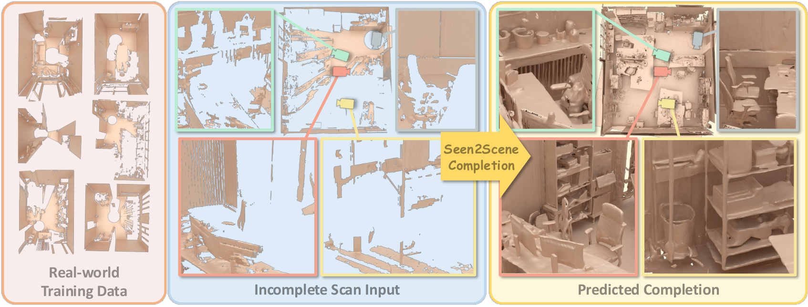
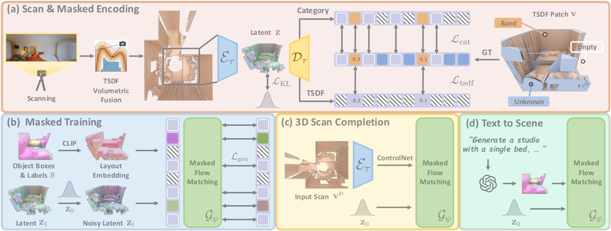
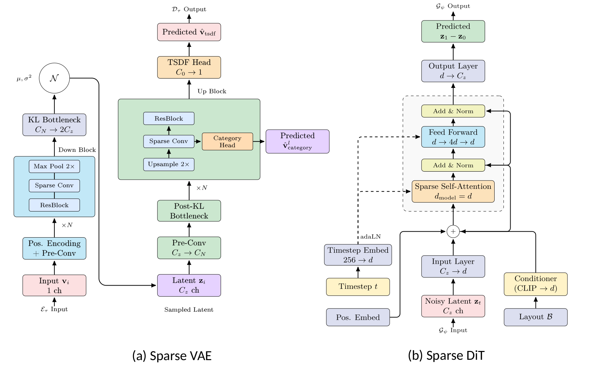
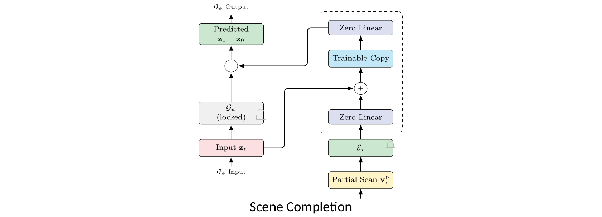
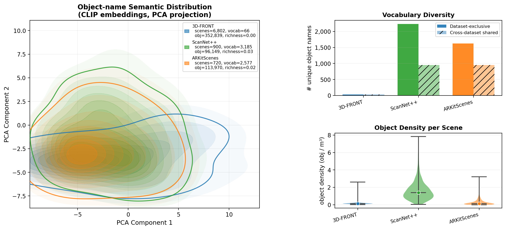
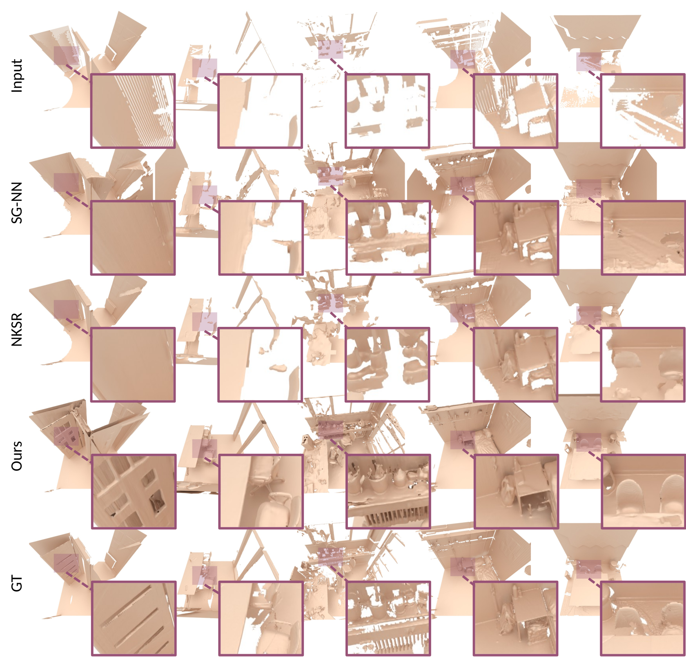
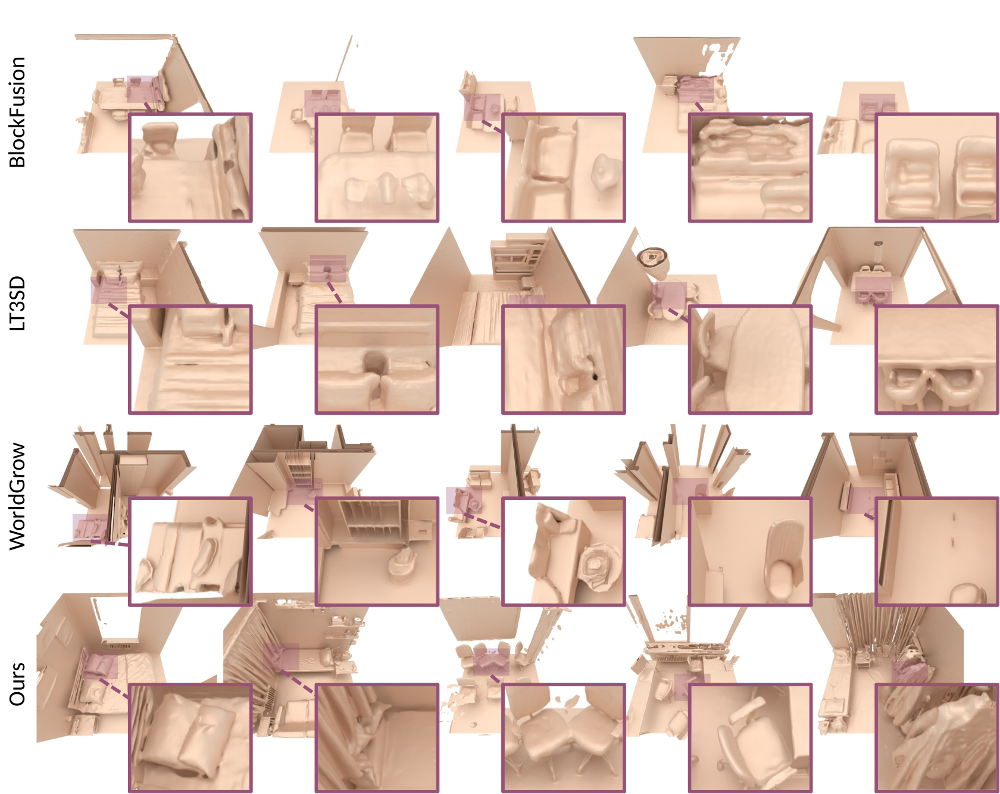
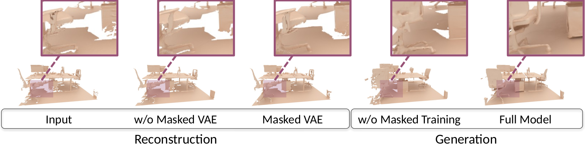

Academic deep read · 3D generative modeling
Seen2Scene：从“看见的扫描”学习完整三维场景
核心不是把未知空间填成空白，而是让未知空间不参与监督：先在 TSDF 表示中保留可见性，再把这一掩码贯穿稀疏 VAE、流匹配与 ControlNet 补全。

一句话总结
Seen2Scene 将真实扫描中的未知体素从表示学习和流匹配监督中同时剔除，再以稀疏 VAE、布局条件 Sparse DiT 与 ControlNet 把部分 TSDF 补全为完整场景，并兼容布局或文本驱动的从零生成。
1. 论文元信息与结论先行
Seen2Scene 研究的是三维扫描补全与三维场景生成的交叉问题：输入可以是一段只覆盖局部表面的 RGB-D/LiDAR 扫描，也可以是一组物体布局框；输出是连续、可网格化的完整场景几何。作者将工作定位为首个能够直接在不完整真实三维扫描上训练的 flow matching 场景模型，这里的“直接”意味着未知区域不需要人工补全为伪真值。
“the first flow matching-based approach that trains directly on incomplete, real-world 3D scans for scene completion and generation.”
论文摘要
论文版本为 arXiv v1，正文与补充材料共 27 页。官方 GitHub 仓库已经发布训练、推理、数据导出、评测代码和预训练权重入口；本文核对的代码快照为提交 65239af（2026-07-03）。因此本文不仅复述论文，还会区分“论文表述”“源码实现”和“分析者判断”。
结论先行：这篇论文最有价值的贡献并不是“又一个更大的 3D DiT”，而是把传感器可见性转化为生成模型能够使用的监督边界。未知区域既不被当作空空间，也不被伪造为完整几何；模型只从大量局部可见表面学习分布，再在补全时用生成先验推断不可见部分。
2. 研究背景与动机：为什么真实扫描不能直接当完整体素训练
传统场景生成方法通常依赖 3D-FRONT、3D-FUTURE 一类合成数据。它们提供完整网格、干净拓扑和一致语义标注，适合监督生成模型，却与真实室内环境存在系统差异：真实物体更杂乱、类别更长尾、摆放不轴对齐，扫描还包含遮挡、反射、传感器噪声与有限视角。
真正棘手的不是“扫描缺了一些点”，而是缺失值的语义不确定。摄像头前方已经穿过的自由空间可以安全标为 empty；桌下、柜后或窗前没有被射线覆盖的位置则只能标为 unknown。若把二者都写成相同的空值，模型会被迫学习“未知就是空”，最终把现实数据的洞和遮挡模式复制进生成结果。
早期 ScanComplete、SG-NN、NKSR 等方法主要把补全视为回归或表面重建：输入部分扫描，输出单一预测。这样的模型能修复局部结构，但对高度多模态的不可见区域缺少显式分布建模。例如，一张只看到椅背的扫描可能对应多种椅腿和扶手结构，单一回归容易平均成模糊几何。
扩散模型与 flow matching 提供了多样生成能力，但主流三维生成器仍习惯以完整合成几何为目标分布。Seen2Scene 的出发点是反过来问：如果真实扫描永远不完整，能否只对每个样本中确实看见的区域定义生成目标，并通过跨场景、跨视角的统计共享，让模型逐渐学会物体与房间的完整形态？
“We present the first masked flow-matching method that can be trained directly on complex, incomplete real-world 3D scans and learn their underlying geometry distributions for accurate scene completion.”
论文 Section 1，贡献列表
这一路径还有一个现实意义：真实扫描不再只是测试域，而成为生成先验的训练来源。补充材料统计显示，真实数据只占 8,736 个场景中的 1,934 个，即约 22.1%，却把语义词汇从 3D-FRONT 的 99 类扩展到跨数据集 4,489 个唯一类别。Figure 10 的 CLIP-PCA 分布和物体密度图说明，真实数据贡献的主要不是数量，而是长尾语义、杂乱度与非规则结构。
3. 预备知识：TSDF、稀疏潜变量与条件流匹配
3.1 从深度像素到世界坐标中的 TSDF
TSDF（Truncated Signed Distance Field）在体素中心存储到最近观测表面的有符号距离，并将绝对值截断在有限范围内。Seen2Scene 使用 1.1 cm 体素和三倍体素大小的截断距离，即约 3.3 cm；每个训练 patch 的空间分辨率是 $256^3$，对应边长约 2.816 m。
像素坐标 $(u,v)$ 与深度 $d$ 先通过相机内参 $\mathbf K$ 反投影到相机坐标 $\mathbf x_c$，再用位姿 $\mathbf T_{wc}$ 变换到世界坐标 $\mathbf x_w$。VDBFusion 沿这些世界坐标射线累积 TSDF；Seen2Scene 随后把世界场景裁成 patch，并把物体框转换到同一局部度量坐标系，因此几何、可见性与布局条件能够逐体素对齐。
这一步是离线数据预处理，不在生成模型中反向传播。论文没有展开相机投影公式，上式用于说明其坐标语义；真正参与训练的输入已经是融合后的 TSDF 与结构状态。
3.2 三态结构：surface、empty 与 unknown
论文使用 TSDF 的截断端点区分“已知自由空间”和“未知空间”。源码进一步把每个体素编码为 BAND、EMPTY、UNKNOWN 三态，并用 known_ratio=0.999 避免浮点端点比较不稳定。
$v_j$ 是第 $j$ 个体素的 TSDF 值，单位为米；$s=1.1$ cm 是体素边长。BAND 表示表面截断带，EMPTY 表示射线已经确认的自由空间，UNKNOWN 则表示相机从未观测；后者不是“没有物体”，而是“没有证据”。
在梯度路径上，UNKNOWN 会在编码阶段从潜变量网格中移除，在 VAE 结构损失中再次被掩码。因此模型不会收到把未知区域推向空空间的梯度，这正是 visibility-guided 的核心。
3.3 Flow matching 的训练与采样语义
Flow matching 学习一个随时间变化的速度场，把高斯噪声分布连续运输到数据分布。训练时不需要运行完整 ODE，只需随机采样一个时间点，构造噪声与数据之间的插值，并监督模型预测该路径的速度；推理时再用 Euler 法沿速度场积分 50 步。
与扩散模型常见的“预测噪声”不同，论文把目标直接写成从噪声潜变量指向几何潜变量的位移。源码使用 Diffusers 的 FlowMatchEulerDiscreteScheduler，时间参数方向与论文符号相反，但两者描述的是同一条线性路径；后文会逐项对应。
4. 方法详解：可见性如何贯穿整个生成管线
Figure 2 给出四段式管线：先把部分扫描压缩为稀疏潜变量，再训练布局条件的 masked flow matching；随后复制生成器形成 ControlNet 分支，用更不完整的扫描控制补全；最后还可将文本经 LLM 翻译为布局框，复用同一生成主干从零生成场景。

flowchart LR A[Depth scans and poses] --> B[TSDF fusion
256 cubed patch] B --> C[Masked sparse VAE
E tau] C --> D[Sparse latent z
32 cubed lattice x 8] N[Gaussian z0] --> G[Sparse DiT
G psi] D --> G L[Boxes B
CLIP labels] --> G P[More-partial scan vp] --> E[Frozen VAE encoder] E --> CN[ControlNet
C phi] CN --> G G --> S[50-step Euler flow] S --> O[VAE decoder
completed TSDF mesh]
4.1 掩码稀疏 VAE：压缩的同时保留“我不知道”
输入 $\mathbf v$ 在概念上是 $256\times256\times256$ 的单通道 TSDF，但实现并不把全部 1,677 万体素送入卷积。表面截断带用 fVDB 稀疏存储，结构张量单独记录三态可见性；编码器经过三次 2 倍下采样，将潜在格点降到 $32^3$，每个保留格点输出 8 通道均值和方差参数。
$q_\tau$ 是编码器给出的后验，$\boldsymbol\mu_\tau$ 与 $\boldsymbol\sigma_\tau$ 对每个稀疏格点、每个潜通道给出均值和标准差；根据补充材料，潜通道数为 8，而稀疏 token 数 $N$ 随每个 patch 的已知区域变化。重参数化先采样标准高斯 $\boldsymbol\epsilon$，再得到可微的 $\mathbf z\in\mathbb R^{N\times8}$，梯度可回传至均值和方差分支。
UNKNOWN 格点在形成 $N$ 之前就被移除，已知但无表面的空格点则用可学习 empty_token 补入。因此潜空间同时包含表面 token 与已知空空间 token，却不包含未知 token。
解码器镜像上采样，并在每个尺度用 structure head 决定哪些体素继续展开；最终 TSDF head 只对预测为表面的体素回归距离。Figure 12 展示的不是普通 dense VAE：稀疏结构预测本身就是解码过程的一部分，错误地保留太多体素会直接推高显存，错误地剪枝则会丢失几何。

这是论文式（1）。$\mathcal L_{\mathrm{tsdf}}$ 约束表面附近的连续有符号距离，$\mathcal L_{\mathrm{cat}}$ 约束体素属于表面还是已知空空间，KL 项把后验拉向标准正态先验 $p(\mathbf z)$，使后续生成器可以从高斯噪声进入同一潜空间。
计算顺序是“编码得到分布 → 采样潜变量 → 多尺度解码结构 → 回归表面 TSDF → 汇总三类损失”。源码默认结构和几何项各乘 $10^2$，KL 配置为 1；论文正文只给出抽象权重 $\lambda_{\mathrm{KL}}$，因此具体量纲以发布配置为准。
$m_s$ 是已知表面截断带中的体素集合，$v_j$ 与 $\hat v_j$ 分别是真值和重建 TSDF，单位都为米；源码在计算前除以截断距离，把数值归一化到约 $[-1,1]$，再用 L1 回归。该损失只作用于 surface voxels，空空间没有连续距离回归，UNKNOWN 更不会进入集合。
L1 相比 L2 对扫描噪声和少量融合异常更稳健。梯度从最终 TSDF head 反传至上采样解码器和编码器，但不会穿过离线 VDBFusion。
$m_e$ 是已知空空间，$m$ 汇总所有已知体素；$y_j=1$ 表示表面，$y_j=0$ 表示空空间，$\hat y_j$ 是 structure head 的 sigmoid 概率。论文把它写成单一 BCE，源码则在多个解码分辨率上重复计算结构 BCE，从粗到细共同监督稀疏拓扑。
直觉上，TSDF 回归回答“表面离体素中心多远”，分类头回答“这里是否值得继续展开几何”。只有两者同时正确，稀疏解码器才能既不制造大量浮游表面，也不提前剪掉细小结构。
4.2 语义布局：把长尾物体名称涂到潜变量格点上
生成器的条件不是一张 RGB 图，而是与 patch 相交的一组轴对齐 3D 框。每个对象名称用 CLIP ViT-B/32 编码，源码将 512 维 CLIP pooled embedding 投影到 Sparse DiT 的 768 维隐藏空间；属于多个框的体素对相应特征求平均。
$K$ 是当前 patch 内相交物体数，$\mathbf c_k\in\mathbb R^3$ 与 $\mathbf s_k\in\mathbb R^3$ 分别是框中心和尺寸，单位为米；$l_k$ 是原始语义字符串。数据加载器先把世界坐标框平移到 patch 局部坐标，几何潜变量的格点中心也映射到同一坐标系，再判断格点属于哪些框。
论文称其为 layout token sequence；当前源码的默认路径更具体：条件特征被“paint”到每个几何 token 后直接加到 Sparse DiT 隐状态，而不是把独立布局 token 与几何 token 拼接。这个实现保留空间对齐和开放词汇语义，但轴对齐框无法表达物体朝向，重叠框的简单平均也可能稀释关系信息。
为了跨数据集处理同义标签，作者没有强制把几千个名称映射到固定类别，而是保留原始文本并用 CLIP 编码。训练时还以 50% 概率从 LLM 生成的同义词、缩写、复数、连字符形式和拼写错误中替换名称；这让 “TV / monitor / television” 一类表面差异映射到相近语义空间。
4.3 Visibility-aware masked flow matching
VAE 冻结后，Sparse DiT $\mathcal G_\psi$ 在稀疏潜空间学习速度场。每个样本先抽取高斯噪声 $\mathbf z_0$ 与目标几何潜变量 $\mathbf z_1$，再沿直线插值。因为未知格点没有进入 $\mathbf z_1$ 的稀疏网格，生成损失天然只定义在已知表面和已知空空间上。
$\mathbf z_0,\mathbf z_1,\mathbf z_t\in\mathbb R^{N\times8}$ 共享同一稀疏格点布局，$t$ 对每个 batch 样本是标量并广播到其全部 token。$t=0$ 时是纯噪声，$t=1$ 时是 VAE 几何潜变量；线性路径的真实速度在任意 $t$ 都是常量 $\mathbf z_1-\mathbf z_0$。
该构造把复杂的概率运输问题转为监督回归：模型看到中间状态、时间和布局条件，预测下一瞬间应沿哪个方向移动。未知区域没有目标 token，因此不会被误导为某个固定终点。
这是论文式（2）。$p_0$ 是标准高斯先验，$p_{\mathrm{geo}}$ 是由冻结 VAE 编码得到的真实部分扫描潜变量分布，$\mathcal B$ 是可选布局条件；模型输出与输入潜变量相同的 $N\times8$ 速度张量。
源码还增加两层训练细节：首先用 logit-normal 分布偏置时间采样并采用 SD3 权重；其次分别平均 surface-band token 与 known-empty token 的误差，再以 band_weight=0.5 混合，避免数量占优的空空间淹没表面梯度。条件以 10% 概率丢弃，用于推理时 classifier-free guidance，默认 guidance scale 为 3.0。
“geometry tokens corresponding to unobserved regions … are excluded from the flow matching objective.”
论文 Section 3.3
4.4 源码对应一：未知区域是从稀疏网格中删除，而不只是损失乘零
数据加载器首先把截断带、空空间和未知区域显式分类。随后 VAE 编码器下采样结构张量，并只保留非 UNKNOWN 的格点；这种“结构级掩码”比在 dense loss 上乘零更省显存，因为未知 token 根本不会进入后续 28 层 Transformer。
volume = loadvdb(file_path)[0]["tsdf"]
volume = crop_vdb(volume, bbox_min, patch_shape, cell_center=True)
volume = torch.from_numpy(volume).float()
volume = torch.clamp(volume, min=-self.truncation, max=self.truncation)
structure = torch.where(
torch.abs(volume) < self.truncation * self.known_ratio,
torch.tensor(Voxel.BAND, dtype=torch.int8),
torch.where(
volume >= self.truncation * self.known_ratio,
torch.tensor(Voxel.EMPTY, dtype=torch.int8),
torch.tensor(Voxel.UNKNOWN, dtype=torch.int8),
),
)
ijks = torch.nonzero(structure == Voxel.BAND)
values = volume[ijks[:, 0], ijks[:, 1], ijks[:, 2]]在 encoder.py:226–255，mask = struct_down != Voxel.UNKNOWN 决定潜变量网格；随后表面卷积特征填入 band 位置，已知空空间位置填入可学习 empty_token。因此 flow matching 收到的 band_mask 不是“已知/未知掩码”，而是已经剔除未知之后的“表面/空空间掩码”。
4.5 源码对应二：论文时间 $t$ 与 Diffusers 的 $\sigma$ 方向相反
latent_tgt = vdb_utils.vdb_to_spconv(latent_tgt)
sigmas = sigmas[latent_tgt.coords[:, 0].long()]
noise = torch.randn_like(latent_tgt.feats)
xt = (1.0 - sigmas) * latent_tgt.feats + sigmas * noise
model_input = latent_tgt.replace(xt)
model_output = self.model(model_input, timesteps, embed=context,
controls=controls)
pred = model_output.feats
target = noise - latent_tgt.feats
loss = masked_weighted_loss(
pred, target, weighting=weighting,
loss_type="l2", batch_reduction="none"
)
loss_band = (loss * band_mask).sum() / (band_mask.sum() + 1e-6)
loss_empty = (loss * (1 - band_mask)).sum() / ((1 - band_mask).sum() + 1e-6)
loss = loss_band * self.band_weight + loss_empty * (1 - self.band_weight)论文令 $t=0$ 为噪声、$t=1$ 为数据，所以目标是 $\mathbf z_1-\mathbf z_0$；Diffusers scheduler 令 $\sigma=1$ 为噪声、$\sigma=0$ 为数据，源码因此使用 noise - latent_tgt。两者只差时间轴和速度符号的同时翻转，不是算法矛盾；复现时若混用论文公式与 scheduler 约定，才会真正把采样方向写反。
4.6 扫描补全：用“更不完整 → 原始不完整”构造自监督配对
真实场景没有完整真值，Seen2Scene 便从原始部分扫描 $\mathbf v$ 中再删除一部分深度帧，得到更不完整的 $\mathbf v^{\mathrm p}$。ControlNet 以 $\mathbf v^{\mathrm p}$ 为条件，以原始 $\mathbf v$ 中额外可见的几何为监督；跨大量场景重复这一过程，模型学习“从少量观察推断更多观察”的映射。
$\mathbf v^{\mathrm p}$ 是 10% 观察比例等更稀疏的 TSDF 输入，$\mathcal E_\tau$ 是已经训练并冻结的 VAE 编码器，输出 $\mathbf z^{\mathrm p}$ 为与目标潜变量相同的 8 通道稀疏表示。源码会把 source latent 重新填充到 target latent 的格点布局，使条件与当前带噪目标 $\mathbf z_t$ 逐 token 对齐。
冻结编码器避免 ControlNet 训练重新定义潜空间。它同时意味着补全上限受 VAE 表示能力约束：若细小结构在编码阶段已被压掉，后续控制分支无法从潜变量中恢复。
这是论文式（3）。$\mathcal C_\phi$ 是可训练 ControlNet，$\mathcal G_\psi$ 是冻结的预训练 Sparse DiT；每一层控制信号与主干 768 维隐藏状态相加，输出仍是 $N\times8$ 的速度预测。
优化时只有 $\phi$ 更新，$\psi$ 与 VAE 参数保持不变。这样做把“真实扫描分布先验”和“具体输入扫描的几何约束”拆开：前者保存在基模型，后者通过控制分支注入，降低小规模补全微调破坏生成能力的风险。

def zero_bottleneck(dim, rank):
return nn.Sequential(
nn.Linear(dim, rank, bias=False),
zero_module(nn.Linear(rank, dim, bias=False)),
)
self.input_zero_proj = zero_module(
nn.Linear(in_channels, in_channels)
)
self.zero_projs = nn.ModuleDict({
str(i): zero_bottleneck(model_channels, zero_proj_rank)
for i in range(num_blocks)
})
cond_feats = self.input_zero_proj(condition.feats)
branch_input = xt.replace(xt.feats + cond_feats)
intermediates = self.model(branch_input, t, return_intermediates=True, **kwargs)
return {
k: v.replace(self.zero_projs[k](v.feats))
for k, v in intermediates.items()
}初始化时输入投影和每层上投影都输出零，所以整个网络严格等价于原生成器；训练开始后，控制信号才逐渐偏离零。rank-64 瓶颈把每层 $768\rightarrow64\rightarrow768$，比完整 768 维线性控制更省参数，但也限制了单层可注入的条件子空间。
4.7 大尺度生成：每一步都切块，而不是生成后再拼接
模型只在 $256^3$ patch 上训练。对更大场景，作者采用 MultiDiffusion：在每一个 Euler 时间步把全局潜变量切成 20% 重叠的 patch，分别预测并更新，再把重叠格点平均回同一个全局潜变量，下一步继续从这个融合状态出发。
$\mathbf x$ 是全局潜在格点坐标，$\mathcal I(\mathbf x)$ 是覆盖该格点的 patch 集合，$\mathbf z_t^{(i)}$ 是第 $i$ 个 patch 在当前 Euler 步后的 8 通道潜特征。源码对重叠位置做无权算术平均，并把结果重建为单个全局 fVDB 张量。
因为融合发生在每个采样步，邻块能够反复交换边界信息，比最终网格拼接更连贯；但这种局部平均没有显式房间拓扑或长程约束，距离超过 patch 重叠范围的结构一致性仍主要依赖布局框和生成先验。
4.8 文本到场景：文本本身不直接进入三维生成器
论文的 text-to-scene 路径是两阶段系统：LLM 先把自然语言转换为物体标签与 3D 包围框，Seen2Scene 再做布局到几何。这个设计复用了经过 CLIP 语义训练的布局接口，用户也能直接编辑框；代价是语言理解、空间规划和几何生成的误差会串联。
因此 Seen2Scene 不是端到端文本条件三维模型。论文 Figure 6 展示了定性样例，但没有给出文本遵循度、布局合法性或 LLM 规划失败率的量化实验；“支持文本生成”应理解为一种可组合应用，而不是论文证据最强的主任务。
5. 实验分析：哪些结果真正支持核心主张
5.1 数据、网络与评测设置
训练集由 6,802 个 3D-FRONT 合成场景、1,006 个 ScanNet++ 真实场景和 928 个 ARKitScenes 真实场景构成。所有数据统一为 1.1 cm TSDF；3D-FRONT 通过 BlenderProc 随机相机渲染深度，再融合出 10% 与 100% 观察比例，真实数据则由 LiDAR/RGB-D 融合得到。
| 数据集 | 场景数 | 属性 | 语义类别 | 几何来源 |
|---|---|---|---|---|
| 3D-FRONT | 6,802 | 合成 | 99 | 艺术家网格 + 虚拟深度 |
| ScanNet++ | 1,006 | 真实 | 2,877 | Faro LiDAR |
| ARKitScenes | 928 | 真实 | 2,466 | 移动 LiDAR |
| 合计 | 8,736 | 真实场景占 22.1% | 4,489 个唯一类别 | 统一 VDB TSDF |
数据来自论文补充材料 Table 5。类别总数不是三行简单相加，因为不同数据集存在重名类别。

Sparse DiT 使用 28 个 block、768 隐藏维、16 个 attention head、2 个 KV head、4 倍 FFN 与 3D RoPE。论文报告 VAE 与生成器均使用 AdamW、学习率 $10^{-4}$、1,000 步 warmup、BF16 和 4 张 H100，推理采用 50 步 Euler 与 CFG 3.0；README 的单机示例 batch size 分别为 2、16、1，不能直接等同于论文的全局 batch 64，复现时需结合 GPU 数和梯度累积核对有效 batch。
5.2 扫描补全：对真实观测的保持和分布质量同时改善
补全实验包含 4,000 个样本。CD 只能在具有完整网格真值的 3D-FRONT 上计算；L2 只评估目标扫描中已观测的区域；TMD 衡量同一输入两次补全的差异；U3D-FPD 比较生成点云与数据分布在 Uni3D 特征空间的距离。
| 方法 | CD ×10⁻² ↓ | L2 ×10⁻⁴ ↓ | TMD ×10⁻² ↑ | U3D-FPD ×10⁻² ↓ |
|---|---|---|---|---|
| SG-NN | 10.77 | 1.90 | 0.00 | 15.41 |
| NKSR | 5.22 | 2.55 | 0.00 | 21.78 |
| Seen2Scene（无 bbox） | 1.92 | 0.53 | 1.69 | 9.57 |
| Seen2Scene（有 bbox） | 2.05 | 0.51 | 3.33 | 7.79 |
论文 Table 1。CD 只在 3D-FRONT 计算；其余指标覆盖 ScanNet++、ARKitScenes 与 3D-FRONT。SG-NN、NKSR 为确定性方法，所以 TMD 为 0。
与 SG-NN 相比，有 bbox 的 Seen2Scene 将 CD 降低约 81.0%、观测区 L2 降低约 73.2%、U3D-FPD 降低约 49.4%。这三项分别支持“整体几何更接近完整真值”“不会为了想象缺失区域而破坏已见表面”“样本分布更像真实场景”三个不同结论，而不是同一指标的重复报告。
更有解释力的是 bbox 消融：无 bbox 版本的 CD 反而从 2.05 降到 1.92，改善约 6.3%，说明局部洞修复主要依赖扫描上下文，强行加入对象框可能扰动小缺口；但 bbox 让 U3D-FPD 从 9.57 降到 7.79，并把 TMD 从 1.69 提升到 3.33，更适合大遮挡区域的语义化、多样补全。布局条件因此不是统一增益，而是在局部保真与全局语义先验之间重新分配权重。

5.3 场景生成：强结果成立，但主表的模型标签需要谨慎阅读
场景生成比较 BlockFusion、LT3SD 与 WorldGrow。DINOv2-FID 从每个 patch 的 30 个视图计算二维感知分布；U3D-FPD 在 Uni3D 三维语义特征中比较点云分布；VLM Score 由 Qwen3-VL-8B-Instruct 对几何质量、结构逻辑、语义一致性和内容密度打 0–10 分。
| 方法 | DINOv2-FID ×10² ↓ | U3D-FPD ×10² ↓ | VLM Score ↑ |
|---|---|---|---|
| BlockFusion | 12.92 | 28.30 | 3.51 |
| LT3SD | 3.51 | 28.55 | 5.20 |
| WorldGrow | 4.44 | 50.83 | 4.69 |
| Seen2Scene（Synthetic only） | 2.73 | 11.55 | 5.61 |
论文 Table 2，仅在 3D-FRONT 上评估。注意原表明确把 Seen2Scene 行标为 “Synthetic only”，并非使用真实扫描的 full model。
即便只用合成数据，Seen2Scene 相对 LT3SD 仍将 DINOv2-FID 降低约 22.2%，U3D-FPD 降低约 59.5%，说明稀疏 TSDF 潜空间、布局条件与 flow matching 本身具有强竞争力。Figure 5 中，基线常见的问题是家具表面过平、物体轴对齐明显或房间结构破碎，而 Seen2Scene 保留了更多局部几何起伏。

5.4 消融实验：掩码训练是主贡献，真实数据和开放词汇是增益来源
| 配置 | 重建 L1 ×10⁻⁴ ↓ | 重建 L2 ×10⁻⁶ ↓ | 重建 CD ×10⁻³ ↓ | 生成 U3D-FPD ×10² ↓ | VLM ↑ |
|---|---|---|---|---|---|
| 无 masked training | 3.24 | 7.1 | 10.64 | 20.28 | 5.66 |
| Seen2Scene full | 2.01 | 2.0 | 9.04 | 14.56 | 5.70 |
论文 Table 3。重建指标评估 VAE，生成指标评估 flow matching；CD 仅在 3D-FRONT，其他指标跨数据集。
masked training 让 VAE L1 降低 38.0%、L2 降低 71.8%，同时让生成 U3D-FPD 降低 28.2%。VLM 只增加 0.04，说明掩码的优势首先体现在几何与分布统计，而非 VLM 的整体视觉偏好；这与论文机制吻合，因为掩码直接修正的是“未知被误当空”的几何监督错误。

| 生成配置 | DINOv2-FID ×10² ↓ | U3D-FPD ×10² ↓ | VLM ↑ |
|---|---|---|---|
| 仅合成数据 | 2.90 | 21.49 | 5.61 |
| 离散类别 | 3.17 | 21.46 | 5.64 |
| 无标签同义词增强 | 2.14 | 18.77 | 5.62 |
| Seen2Scene full | 1.90 | 14.56 | 5.70 |
论文 Table 4，覆盖 ScanNet++、ARKitScenes 与 3D-FRONT。该评估范围与只在 3D-FRONT 比基线的 Table 2 不同。
full model 相对 synthetic-only 将 DINOv2-FID 降低约 34.5%、U3D-FPD 降低约 32.2%，这是“真实扫描训练有效”的最直接量化证据。离散类别的退化甚至比仅合成数据更明显，说明跨数据集硬映射会丢失细粒度名称；同义词增强的收益较小但稳定，主要改善开放词汇鲁棒性。
6. 源码结构与复现性：论文组件落在哪些文件
官方仓库不是只含推理脚本的演示包。它包含从 3D-FRONT/ARKitScenes/ScanNet++ 数据导出，到 VAE、生成器、ControlNet 训练，再到 DINOv2-FID、U3D-FPD、L1/L2/TMD 评测的完整目录；README 还给出三阶段命令和预训练权重目录结构。
| 论文组件 | 核心文件 | 实现要点 |
|---|---|---|
| TSDF 三态与 patch 采样 | dataset/dataset.py | BAND / EMPTY / UNKNOWN；物体中心附近随机裁剪 |
| Masked sparse VAE | models/fvdb/{encoder,decoder,sparse_vae}.py | 未知格点删除、empty token、结构树与 TSDF head |
| VAE 损失 | tools/loss_utils.py | 多尺度结构 BCE、已知表面 L1、KL |
| 布局条件与 flow matching | models/backbone/flow_matching.py | CLIP paint、CFG、SD3 权重、Euler 采样 |
| Sparse DiT | models/sparse/dit.py | 28 blocks、adaLN、RoPE、逐层 control 注入 |
| ControlNet | models/backbone/controlnet.py | 冻结主干、deepcopy 分支、rank-64 zero bottleneck |
| 大尺度 MultiDiffusion | models/fields.py、train_gen.py | 20% overlap、每步切块、重叠均值融合 |
环境复现的门槛不低：README 固定 Python 3.11、PyTorch 2.4.1、CUDA 12.0，并需要本地编译 FlashAttention 2.7.4、fVDB 0.2.1 与 TorchSparse 2.1.0。fVDB 和 TorchSparse 都依赖 CUDA 扩展，数据渲染还需 Blender/BlenderProc；这是一套面向 Linux GPU 服务器的研究代码，而非普通 pip 安装即可运行的轻量项目。
可复现的部分
版本化 conda 环境、三阶段训练命令、检查点层级、数据映射 CSV、完整模型与指标实现均已公开；代码还对空稀疏 batch、坐标边界和 CPU offload 做了工程处理。
仍需研究者补齐的部分
原始数据许可与下载、ScanNet++ LiDAR 融合、论文确切训练时长/有效 batch、评测 patch 列表及 VLM 运行成本没有一键封装。README 的 ScanNet++ fusion 仍明确标为 TODO。
还有两处论文—代码差异值得复现者记录。第一，论文说 self-attention 在 geometry 与 layout token 上联合执行，而当前默认实现把 CLIP 条件加到每个 geometry token；第二，补充材料称结构块为 “GroupNorm→Conv→SiLU”，配置字段实际写作 order="gcs"，需以 fVDB block 对字符顺序的定义核实。它们不否定方法，但说明仅凭架构图无法还原全部实现语义。
7. 讨论：Seen2Scene 真正改变了什么
7.1 方法学意义：把缺失数据机制纳入生成目标
Seen2Scene 的思想可以抽象为 missing-not-at-random 下的生成学习：真实扫描缺失与相机视角、遮挡、材质相关，并非随机丢点。如果模型忽略这一机制，训练分布会混入系统性空洞；如果显式建模可见性，真实数据就能提供有效的局部几何样本。论文的两阶段掩码证明，可见性不仅是数据清洗标记，而应成为表示结构和损失定义的一部分。
7.2 适用边界：室内、度量 TSDF、可获得相机/扫描配准
该方法最适合具有可靠位姿和深度融合的室内扫描。它依赖统一 1.1 cm 体素尺度、稳定的 TSDF 符号与截断端点；若输入是未配准点云、稀疏室外 LiDAR、动态场景或跨尺度建筑，预处理误差会先污染 visibility mask，再传递给 VAE 和生成器。
对象布局框并非补全的必要条件，Table 1 已经证明无框版本在 CD 上更好。对实际系统而言，这意味着可以在没有标注框的新扫描上运行；但若希望补全大遮挡对象或进行可控生成，仍需要检测器、人工框或 LLM 布局，其误差会成为新的上游瓶颈。
7.3 评测含义：真实世界的“正确补全”本身不可直接观察
ScanNet++ 与 ARKitScenes 的目标扫描也不完整，所以 L2 只能检查模型有没有破坏已见区域，无法判断未知区域想象得是否真实；CD 只能退回 3D-FRONT 完整网格。U3D-FPD、DINO-FID 与 VLM 分数补充了分布和感知证据，但它们仍不能给出每个真实不可见表面的逐点真值。
因此论文最稳健的结论是“模型生成的完整场景更接近参考分布，并保持已观测几何”，而不是“在真实扫描未知区恢复了唯一正确几何”。生成式补全本来就允许多解，未来评测应同时报告条件一致性、覆盖率、校准后的多样性和少量可控完整真值。
8. 局限分析
8.1 作者明确承认的局限
- 分辨率与压缩损失：补充材料 Section E 指出，TSDF 与稀疏 VAE 的分辨率限制会丢失非常细的几何。1.1 cm 体素、8 倍下采样和结构剪枝对桌腿边缘、线缆、薄片和小装饰都不友好。
- 没有外观与材质：输出是几何 TSDF/mesh，不生成纹理、反射和材料属性。论文把真实外观与材质增强列为未来方向，因此当前“realistic”主要指几何与布局统计，而非可直接使用的完整数字资产。
8.2 独立判断：证据和系统设计仍有六个缺口
- 真实未知区缺少可验证真值。真实数据上的 L2 只覆盖已观测区域，定性图中的“更完整”可能是真实推断，也可能是视觉上合理但错误的幻觉。需要受控遮挡的高完整度扫描或机器人后续观测做验证。
- 主表归因存在报告不一致。Table 2 的最佳生成行是 Synthetic-only，但正文把优势归因于真实扫描训练。Table 4 支持真实数据有效，却不是同一评估设置；论文应补充 full model 在 Table 2 统一 3D-FRONT protocol 下的数字。
- 轴对齐框和简单特征平均限制关系表达。旋转家具、嵌套结构、接触关系与“物体 A 在物体 B 上方”不能由中心、尺寸和标签充分描述。真实数据恰好包含更多 off-axis 布局，这与条件表示之间存在张力。
- 大场景一致性主要靠局部重叠平均。20% overlap 能减弱接缝，但没有显式全局拓扑、跨房间约束或闭环优化。论文展示多房间定性结果，却未报告 seam rate、连通性、墙体闭合或场景尺度增长时的错误曲线。
- VLM 评测的校准尚不充分。Qwen3-VL 分数覆盖四个感知维度，但论文没有报告与人类评分的相关性、不同渲染视角的方差或模型更换后的稳定性。0.04–0.09 的小幅提升不应被过度解释。
- 复现成本高。论文训练使用 4 张 H100，代码依赖多套 CUDA 扩展和三个大型数据集；即使权重已发布，重新训练与完整评测仍需要较高算力、存储和数据工程投入。
9. 结论
Seen2Scene 给出了一个清晰而可复用的答案：当真实三维数据天然不完整时，不必先制造完整伪标签；应把传感器可见性编码进数据结构，让未知区域从 VAE 表示、结构损失和生成目标中一致消失。这样，真实扫描中的局部表面、长尾对象与杂乱布局就能成为生成模型的有效训练证据。
从系统上看，masked sparse VAE 解决“如何压缩部分 TSDF”，Sparse DiT 与 flow matching 解决“如何学习部分几何的分布”，ControlNet 解决“如何让具体扫描约束生成”，MultiDiffusion 解决“如何把 patch 模型扩到多房间”。实验最强地支持了掩码训练与真实数据的几何分布收益；文本生成、超大尺度一致性和真实未知区的可验证正确性仍是后续工作。
10. 资料来源与核验范围
- arXiv 摘要页：版本、作者、提交日期、摘要与主题分类。
- 论文 HTML 全文 与 27 页 PDF：正文、补充材料、公式、Figure 与 Table 编号。
- 官方 GitHub 仓库：README、训练/推理命令、数据处理、模型与评测实现；源码行号固定到提交
65239af。 - 官方项目页：视频、定性结果与资源入口。
本文中的“论文事实”以 arXiv v1 与官方源码为依据；涉及标准相机投影、三态 TSDF 形式化、MultiDiffusion 平均公式和局限判断的段落均已显式标注为背景解释或分析者推断，没有作为论文原式引用。